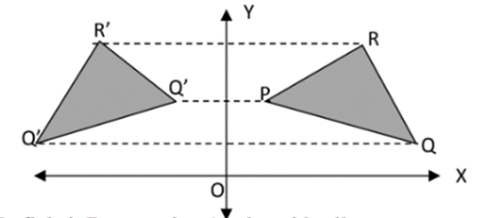

Matematika Wajib Kelas 11

Selamat datang di pembelajaran Matematika Wajib. Disini, kami akan menuliskan rangkuman dari materi Refleksi yang sudah disampaikan di kelas.
Refleksi
Pengertian
Refleksi adalah suatu transformasi yang memindahkan tiap titik pada bidang atau garis/kurva menggunakan sifat bayangan oleh suatu cermin.
Sifat-sifat
- Jarak dari titik asal ke cermin sama dengan jarak cermin ke titik bayangan.
- Garis yang menghubungkan titik asal dengan titik bayangan tegak lurus terhadap cermin.
- Garis-garis yang terbentuk antara titik-titik asal dengan titik-titik bayangan akan saling sejajar
Jenis-jenis
- Refleksi terhadap sumbu X. Jika titik A (x,y) dicerminkan terhadap sumbu Y, maka akan menghasilkan bayangan
A'(x,-y)

- Refleksi terhadap sumbu Y. Jika titik A(x,y) dicerminkan terhadap sumbu Y, maka akan menghasilkan bayangan
A'(-x,y)

- Refleksi terhadap garis x = h. Jika titik A(x,y) dicerminkan terhadap garis x = h, maka akan menghasilkan
bayangan A'(2h - x, y)

- Refleksi terhadap garis y = h. Jika titik A(x,y) dicerminkan terhadap garis y = h, maka akan menghasilkan
bayangan A'(x,2h - y)

- Refleksi terhadap titik 0 (0,0). Jika titik A(x,y) dicerminkan terhadap titik asal 0(0,0), maka akan
menghasilkan bayangan A'(-x,-y)
.png)
- Refleksi terhadap garis y = x. Jika titik A(x,y) dicerminkan terhadap garis y = x, maka akan menghasilkan
bayangan A'(y,x)

- Refleksi terhadap garis y = -x. Jika titik A(x,y) dicerminkan terhadap garis y = -x, maka akan menghasilkan
bayangan A'(-y,-x)